Nadajnik Remote ID dla Pilota Drona
DRONE ATAK MX • osobisty nadajnik Remote ID z funkcją echa i trybem poszukiwania treningowego.
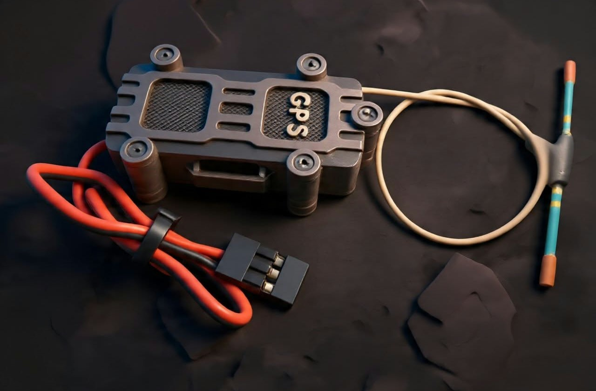
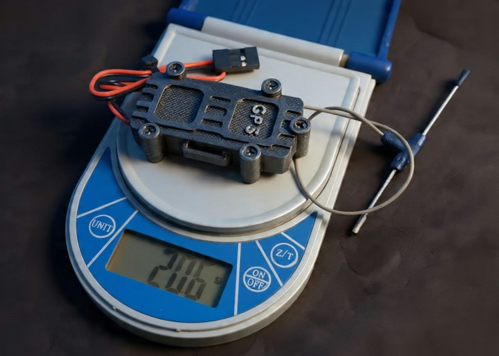
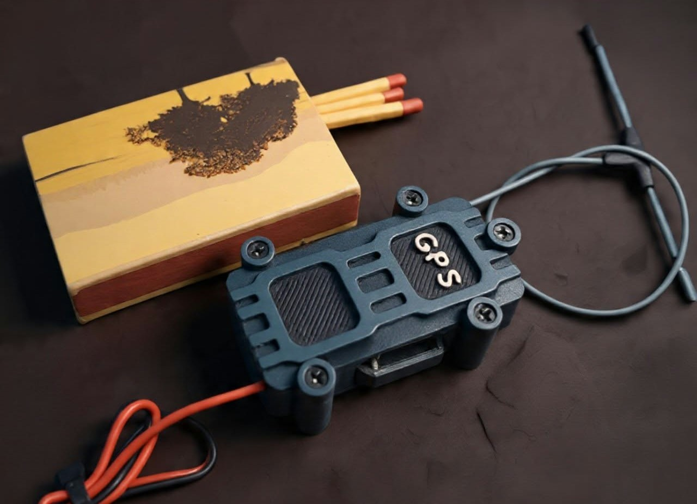
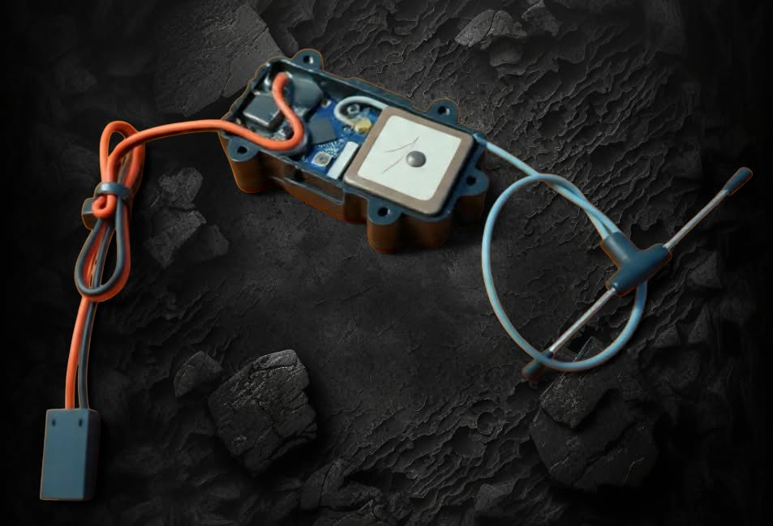
O nadajniku — ogólne informacje
Nadajnik Remote ID DroneAtak to osobiste urządzenie dla pojedynczego pilota drona, przeznaczone do szkolenia, testowania odbiorników Remote ID oraz prowadzenia ćwiczeń z zakresu świadomości sytuacyjnej. Urządzenie emituje rzeczywisty sygnał Remote ID zgodny z normami ASTM F3411 i ASD-STAN, a jednocześnie pozwala na latania na dowolnych danych Remote ID — czyli na symulowanie tożsamości innego drona bez modyfikacji samej platformy latającej.
Nadajnik jest kompaktowy, zasilany z 5 V (powerbank / telefon / ładowarka / FC) i może być zamontowany na dowolnym dronie treningowym. Dzięki niemu pilot ćwiczy procedury identyfikacji, a obsługa naziemna widzi na swoich odbiornikach dokładnie taki obraz, jaki zobaczyłaby w realnej sytuacji operacyjnej.
Funkcja echa — mylenie śladu i Swarm Engine
Jedną z kluczowych funkcji nadajnika jest tryb echa (Swarm Engine). Po jego włączeniu nadajnik emituje dodatkowe, fałszywe pakiety Remote ID, które wyglądają jak kolejne drony znajdujące się w pobliżu rzeczywistej pozycji pilota. Obsługa naziemna widzi wtedy całą grupę obiektów jednocześnie — oryginalny dron pilota oraz rój celów pozornych.
- Liczba ech: płynnie regulowana suwakiem w zakresie od 0 do 50 celów pozornych.
- Rozrzut odległości: dystans pomiędzy dronami regulowany od 25 do 300 metrów.
- Szyk roju / Ugrupowanie: wybór formacji taktycznej (np. Kwadrat / Siatka z dronem w środku).
- Tożsamość i OPSEC: każde echo posiada unikalny adres MAC i sygnaturę UAS ID zsynchronizowaną z kursem. Dane ech generowane są w Pamięci RAM i nie obciążają logów.
Tryb rzeczywistego lotu na dowolnych danych Remote ID
Nadajnik można zamontować na dowolnym dronie treningowym. Urządzenie wysyła rzeczywistą pozycję z wbudowanego modułu GPS oraz dowolne dane tożsamości Remote ID ustawione w panelu konfiguracyjnym.
Oznacza to, że pilot może ćwiczyć lot jako:
- dowolny typ statku i klasa UE — np. Quadcopter / Multirotor w klasie C6 (STS-02),
- dowolny numer seryjny — np.
MaxGyver2024-2026, - dowolny zarejestrowany operator — np.
POL_MAXIIII001-9x2z chronionym PIN-em (OPSEC Privacy Guard), - dowolny opis misji / Self ID — np.
WKP.
Dane techniczne
Platforma mikroprocesorowa: Espressif ESP32-C3-MINI-1 — procesor RISC-V 160 MHz, 4 MB Flash, 400 KB SRAM, obsługa Wi-Fi 802.11 b/g/n (2,4 GHz) oraz Bluetooth 5 LE / Legacy. Interfejs USB-Serial/JTAG. Zasilanie 5 V.
Moduł pozycjonowania GNSS / GPS: Wbudowany wysokowydajny odbiornik HT1818Z3G5L oparty na układowym rozwiązaniu AT6558R (Zhongke Micro 32-bit RISC CPU z dedykowanym blokiem cyfrowym i RF).
- Częstotliwość odświeżania: Ultraszybki pomiar pozycji z częstotliwością 10 Hz (10 odczytów na sekundę), idealny dla wysoce dynamicznych platform FPV oraz statków powietrznych.
- Interfejs i predkość UART: Magistrala szeregowa strojona na prędkość 115200 bps, gwarantująca brak opóźnień i buforowania ramek NMEA.
- Obsługa systemów satelitarnych: Jednoczesny, równoległy odbiór sygnałów z 6 konstelacji: BDS (BeiDou), GPS, GLONASS, GALILEO, QZSS oraz SBAS (WAAS/EGNOS/MSAS).
- Czułość i dynamika: Czułość śledzenia na poziomie -162 dBm, akwizycja na zimno -148 dBm, odporność na zakłócenia (anti-jamming) oraz ultra-szybki zimny start (≤32 s) i gorący start (≤1 s).
Moc i pasmo RF:
- Pasmo Wi-Fi: Wybór kanału (1–13, domyślnie 6), moc nadawcza regulowana do +20 dBm (np. +8 dBm).
- Moc BLE: Regulowana od 0 dBm do +21 dBm.
- Obsługiwane protokoły: Wi-Fi Beacon 802.11, BLE 4.2 Legacy, BLE 5.0 Extended (Coded PHY).
- Interwał emisji: Konfigurowalny (od 20 ms do 500 ms).
Certyfikaty ESP32-C3-MINI-1
| Certyfikat / region | Numer / data |
|---|---|
| FCC (USA) | 2AC7Z-ESPC3MINI1 — 24.06.2021 |
| CE (Unia Europejska) | Zgodność RED 2014/53/EU |
| SRRC (Chiny) | CMIIT ID 2021DJ5678 |
| IC (Kanada) | 21098-ESPC3MINI1 |
| RoHS / REACH | Zgodność środowiskowa UE |
Panel WWW — interfejs konfiguracyjny
Poniżej znajdują się zrzuty ekranu z poszczególnych modułów panelu konfiguracyjnego nadajnika. Interfejs jest dostępny przez przeglądarkę WWW pod adresem http://192.168.4.1 po połączeniu z punktem dostępowym Wi-Fi. Kliknij wybraną grafikę, aby otworzyć powiększenie w taktycznej ramce.
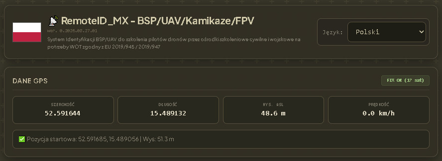
Nagłówek systemu & Dane GPS
Główna sekcja informacyjna nadajnika prezentuje aktualny status oprogramowania oraz precyzyjne odczyty z modułu GNSS/GPS.
- Oznaczenie modułu:
RemoteID_MX - BSP/UAV/Kamikaze/FPV(wersja oprogramowania np. 0.2025.03.27.01). - Wybór języka: Szybkie przełączanie języka interfejsu (np. Polski).
- Dane pozycji GNSS: Szerokość i długość geograficzna, wysokość n.p.m. (ASL) oraz aktualna prędkość.
- Status Fixa: Informacja o liczbie śledzonych satelitów (np.
FIX OK (17 sat)) oraz zapamiętanej pozycji startowej.
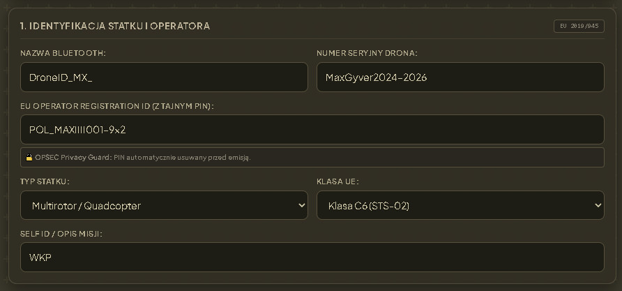
Identyfikacja statku i operatora
Sekcja odpowiedzialna za oficjalne parametry tożsamości Remote ID emitowane w pasmie 2.4 GHz zgodnie z normami unijnymi EU 2019/945 i 2019/947.
- Nazwa Bluetooth: Rozgłaszana nazwa urządzenia w pakietach rozgłoszeniowych (np.
RemoteID_MX). - Numer seryjny drona: Unikalny identyfikator sprzętowy (np.
MaxGyver2024-2026). - EU Operator Registration ID: Numer rejestracyjny operatora wraz z Tajnym PIN-em.
- OPSEC Privacy Guard: Wbudowana ochrona prywatności — Tajny PIN jest automatycznie odcinany i usuwany przed emisją radiową.
- Typ statku i klasa UE: Wybór konstrukcji (np. Multirotor / Quadcopter) oraz kategorii (np. Klasa C6 STS-02).
- Self ID / Opis misji: Dowolny tekst misji lub identyfikator taktyczny (np.
WKP).
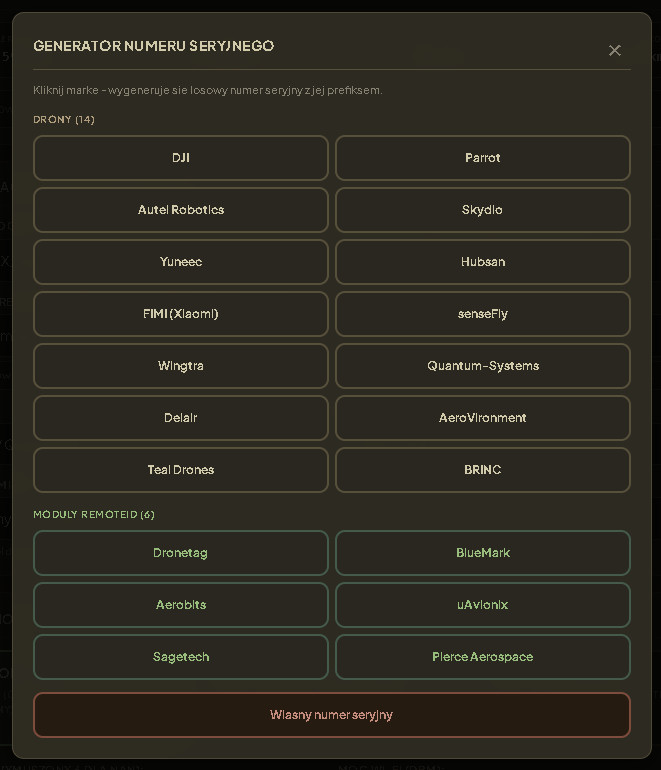
Generator numeru seryjnego & Wybór marki
Narzędzie wbudowane w panel, pozwalające na natychmiastowe wybranie produkcyjnej marki drona lub modułu Remote ID, pod jakną dany obiekt będzie widoczny na skanerach przestrzeni.
- 14 fabrycznych marek dronów: Szybki wybór dedykowanego prefiksu (np. DJI, Autel Robotics, Parrot, Skydio, Yuneec, Hubsan, FIMI Xiaomi, senseFly, Wingtra, Quantum-Systems, Delair, AeroVironment, Teal Drones, BRINC).
- 6 marek modułów Remote ID: Dedykowane prefiksy modułów zewnętrznych (Dronetag, BlueMark, Aerobits, uAvionix, Sagetech, Pierce Aerospace).
- Własny numer seryjny: Opcja ręcznego wprowadzenia dowolnego autorskiego ciągu znaków.
- Brak zewnętrznych baz danych: Oprogramowanie układowe generuje poprawną strukturę i prefiksy całkowicie autonomicznie, bez połączenia z siecią Internet.
- Specyfika odbiorników i skanerów: Programy konsumenckie DJI odczytują wyłącznie własne numery seryjne DJI, podczas gdy profesjonalne stacje detekcji oraz systemy C-UAS dekodują pakiety wszystkich producentów.
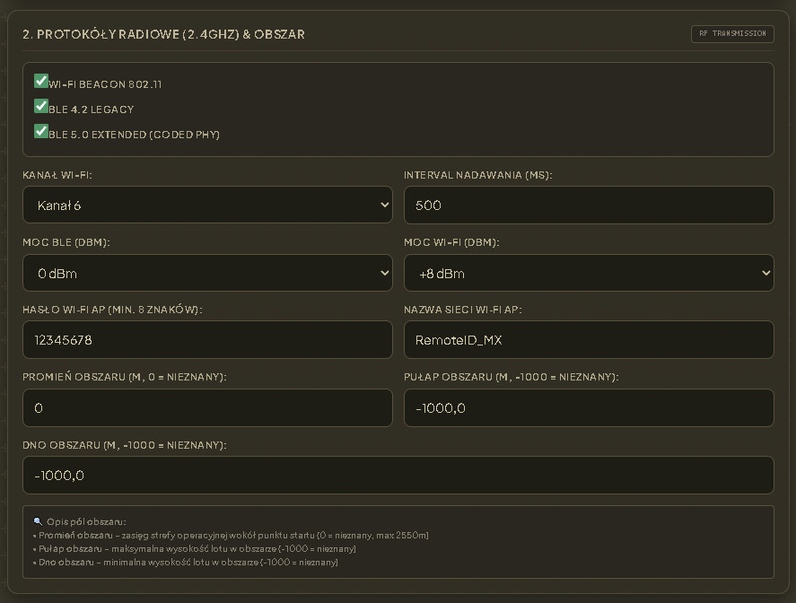
Protokoły radiowe (2.4GHz) & Obszar
Moduł umożliwiający pełne zarządzanie warstwą radiową RF nadajnika oraz parametrami strefy operacyjnej.
- Aktywacja protokołów: Niezależne przełączniki dla
Wi-Fi Beacon 802.11,BLE 4.2 LegacyorazBLE 5.0 Extended (Coded PHY). - Dostrajanie RF: Wybór kanału Wi-Fi, interwału nadawania (np. 500 ms) oraz mocy wyjściowej dla BLE (0 to +21 dBm) i Wi-Fi (np. +8 dBm).
- Wi-Fi Access Point: Konfiguracja nazwy sieci (SSID) oraz hasła zabezpieczającego do interfejsu WWW.
- Definiowanie strefy: Promień obszaru operacyjnego wokół punktu startu, pułap oraz dno obszaru w metrach.
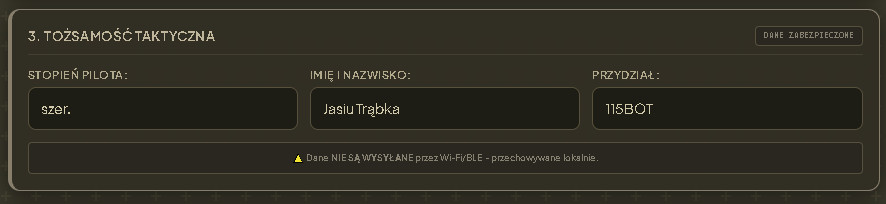
Tożsamość taktyczna
Sekcja służąca do wprowadzania wewnętrznych danych personalnych operatora i przynależności organizacyjnej.
- Stopień pilota: Dowolny stopień wojskowy lub funkcja (np.
szer.). - Imię i nazwisko: Dane identyfikacyjne pilota (np.
Jasiu Trąbka). - Przydział: Kod jednostki lub pododdziału (np.
115BOT). - Ochrona danych: Informacje w tej sekcji są przechowywane wyłącznie w lokalnej pamięci Flash nadajnika i NIE SĄ emitowane przez sygnały radiowe Wi-Fi/BLE.
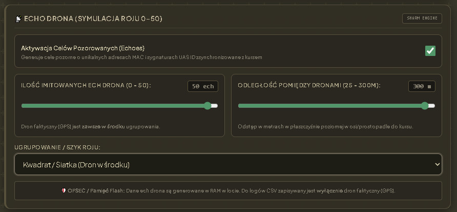
Echo drona — Swarm Engine (Rój 0–50)
Zaawansowany moduł generowania taktycznych celów pozornych do mylenia systemów rozpoznania naziemnego.
- Aktywacja celów pozornych: Generuje wirtualne obiekty z unikalnymi adresami MAC i sygnaturami UAS ID zsynchronizowanymi z kursem drona.
- Ilość ech: Płynna regulacja od 0 do 50 imitowanych obiektów.
- Odległość międzysieciowa: Ustala dystans w przestrzeni poziomej od 25 do 300 metrów wokół drona faktycznego.
- Geometria szyku: Wybór ugrupowania (np. Kwadrat / Siatka z dronem rzeczywistym w środku).
- Wydajność OPSEC: Wszystkie dane ech są tworzone w Pamięci RAM w locie — logi CSV rejestrują wyłącznie realny ślad GPS.
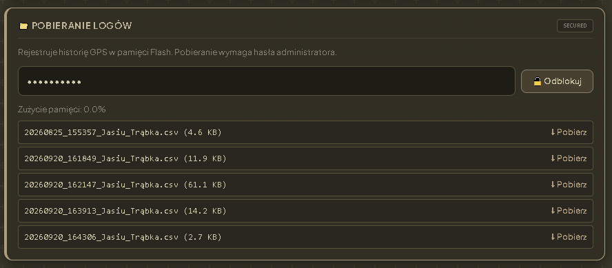
Pobieranie logów lotu
Zintegrowana czarna skrzynka rejestrująca historię parametrów lotu bezpośrednio w nieulotnej pamięci Flash nadajnika.
- Zabezpieczenie dostępu: Wymaga podania hasła administratora (strefa
SECURED). - Monitor zasobów: Bieżące wskazanie zużycia pamięci Flash urządzenia.
- Pliki CSV: Przejrzysta lista zapisanych lotów z sygnaturą czasową i nazwiskiem pilota, z opcją szybkiego pobierania na urządzenie.
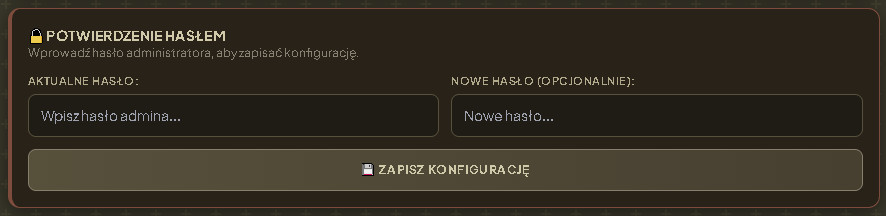
Potwierdzenie hasłem & Zapis
Moduł zabezpieczający przed nieautoryzowaną modyfikacją parametrów operacyjnych nadajnika.
- Weryfikacja: Wprowadzenie aktualnego hasła administratora wymogiem zatwierdzenia zmian.
- Zmiana credentiali: Opcjonalna zmiana hasła administracyjnego.
- Przycisk zapisu: Przycisk
ZAPISZ KONFIGURACJĘtrwale zapisuje ustawienia w rejestrze EEPROM/NVS.
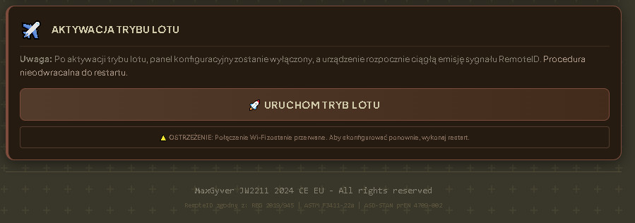
Aktywacja trybu lotu
Przełącznik przechodzenia ze stanu konfiguracji naziemnej w stan ciągłego wykonywania zadania taktycznego.
- Wyłączenie AP Wi-Fi: Po kliknięciu
URUCHOM TRYB LOTUpanel konfiguracyjny zostaje wyłączony, a sieć Wi-Fi zamknięta w celu redukcji sygnatury elektromagnetycznej. - Emisja Remote ID: Urządzenie przechodzi w autonomiczny tryb nadawania pakietów identyfikacyjnych.
- Zabezpieczenie: Procedura nieodwracalna bez fizycznego restartu zasilania nadajnika.
Wersja minimalna nadajnika — Ultra-Light 13g
Dla miniaturowych dronów FPV oraz zastosowań specjalnych przygotowana została wersja minimalna nadajnika. Posiada ona dokładnie ten sam zestaw funkcji, pełny panel konfiguracyjny WWW oraz wsparcie dla protokołów BLE 5 i Wi-Fi Beacon, zredukowane do absolutnego minimum wagowego.
- Zasilanie: Direct 5 V (z kontrolera lotu FC lub dedykowanego BEC).
- Masa całkowita: Zaledwie 13,1 grama (włączając moduł, okablowanie i elastyczną antenę).
- Pełna funkcjonalność: Zapewnia obsługę trybu echa (Swarm Engine), zmianę danych tożsamości, integrację z systemem TAK/ATAK oraz rejestrator logów GPS.
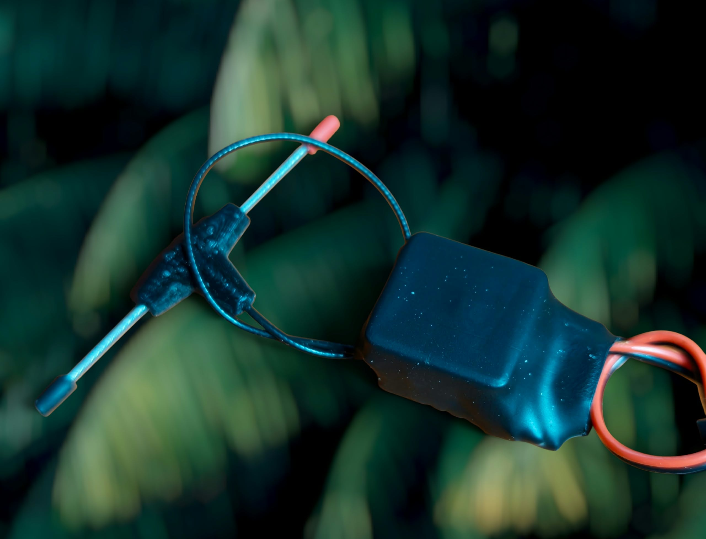
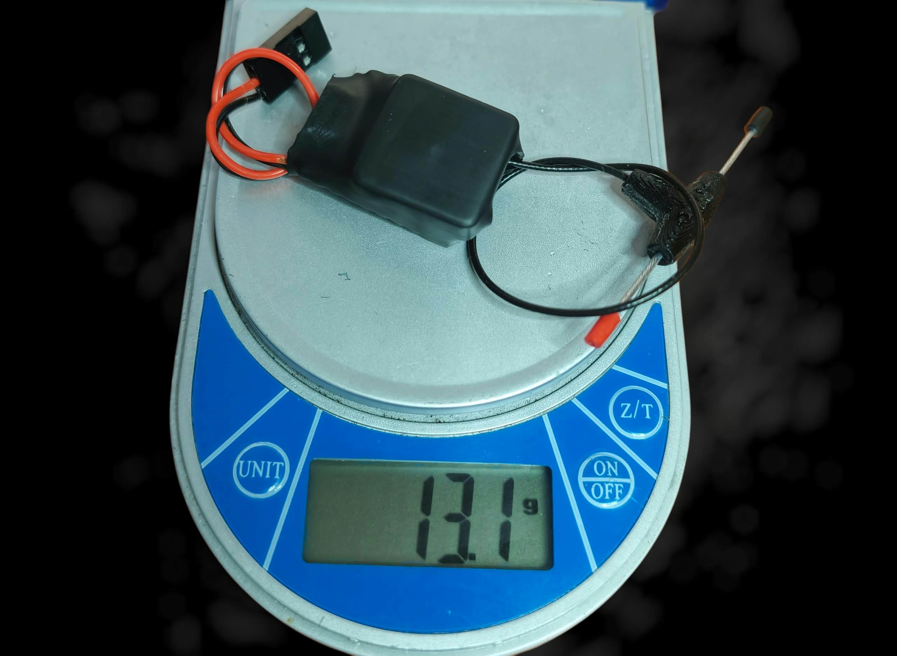
Widok symulacji echa w systemach skanujących przestrzeń (C-UAS / Remote ID)
Poniżej przedstawiono przykładowy widok echa generowanego w eterze, obserwowany od strony odbiorników, stacji detekcji radiowej oraz oprogramowania skanującego przestrzeń powietrzną (np. skanery OpenDroneID, stacje antydronowe C-UAS, systemy dowodzenia ATAK/TAK):
- Montaż na fizycznym dronie: Nadajnik musi być fizycznie podczepiony pod prawdziwego drona w locie i pobierać jego rzeczywiste odczyty z GPS.
- Jeden dron realny, reszta to cienie: Spośród wszystkich wykrytych obiektów na ekranach stacji monitorujących tylko jeden obiekt jest fizycznym, latającym dronem. Pozostałe obiekty (aż do 50 sztuk) stanowią wyłącznie cyfrowe "cienie" / cele pozorne generowane radiowo przez silnik Swarm Engine.
- Dynamiczne ugrupowanie: Cele pozorne poruszają się w zadanym w konfiguracji szyku (np. kwadrat, siatka, promień rozrzutu 25–300 m), podążając idealnie za śladem nawigającym prawdziwej maszyny i myląc systemy rozpoznania stacji naziemnych.
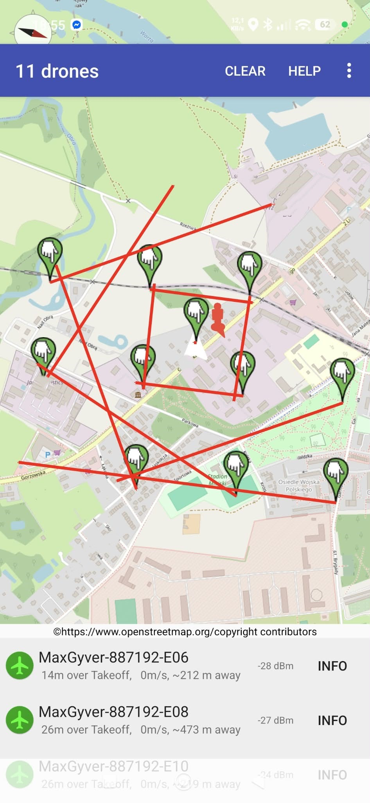
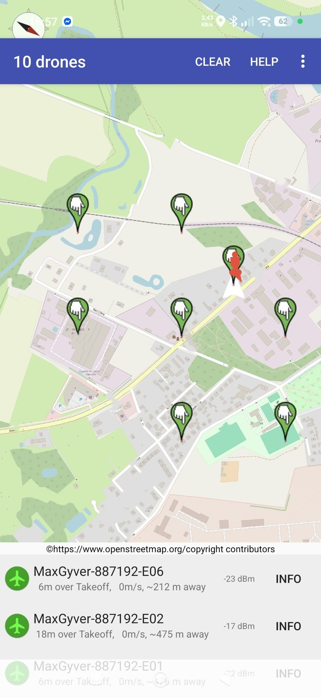
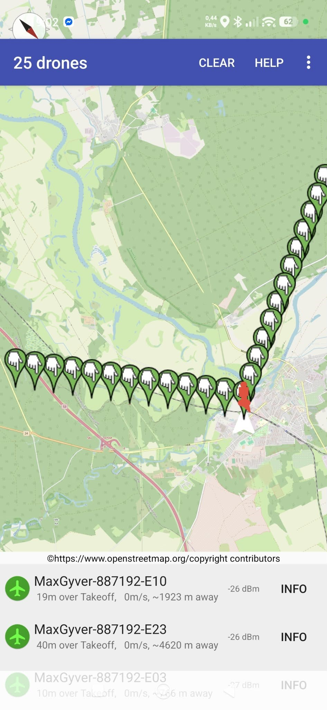
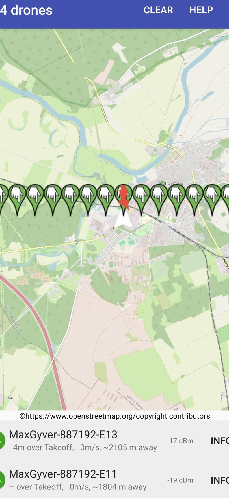
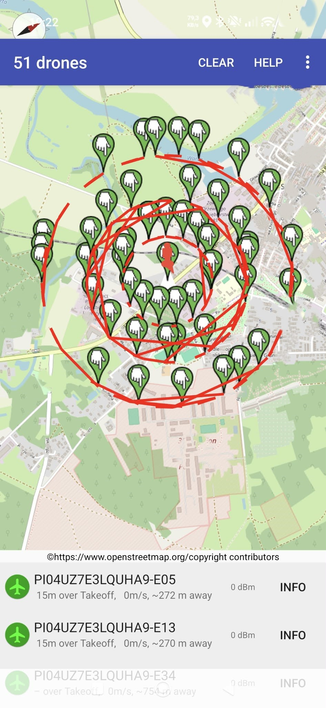
REAL PHOTO

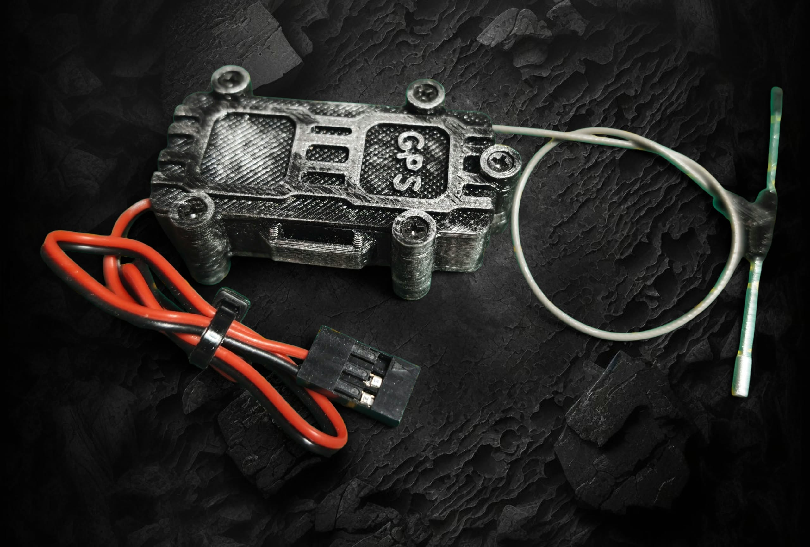
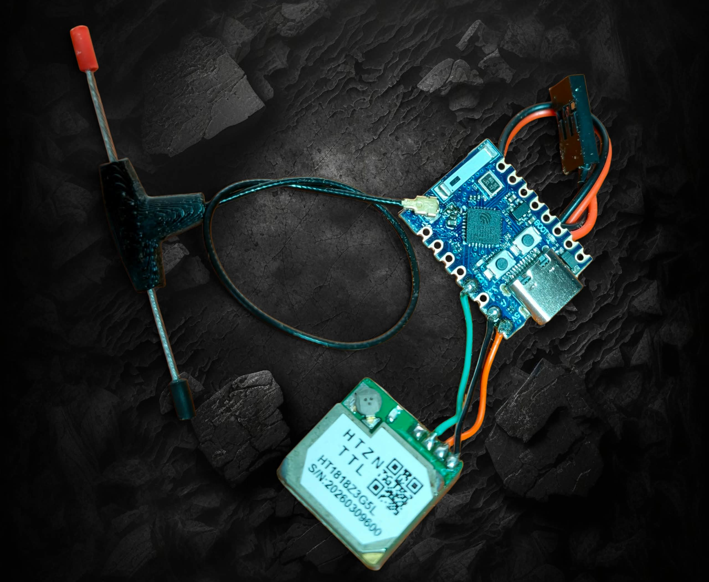

Wybór standardu emisyjnego — Unia Europejska (EU) vs USA (FAA)
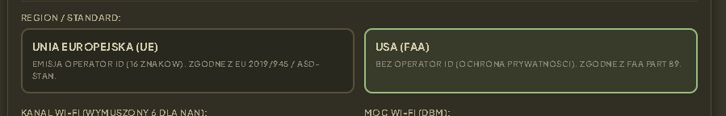
Nadajnik Remote ID posiada wbudowaną obsługę jurysdykcji radiowej, umożliwiającą przełączanie struktury transmitowanych ramek w zależności od strefy geograficznej i wytycznych organizacyjnych.
Główne różnice pomiędzy normą Unii Europejskiej a przepisami USA:
- Unia Europejska (ASD-STAN prEN 4709-002 / REG 2019/945):
Wymaga bezwzględnej emisji jawnego identyfikatora rejestracyjnego operatora (
Operator ID— 16 znaków bez kodu PIN). Dane te są dołączane do wszystkich pakietów Wi-Fi Beacon, Wi-Fi NAN oraz cyklu Bluetooth Low Energy. - Stany Zjednoczone (FAA 14 CFR Part 89 / ASTM F3411-22a):
Ze względów ochrony prywatności cywilnej przepis FAA kategorycznie zabrania emisji numeru rejestracyjnego operatora w sygnaturze radiowej. W trybie
REGION_USAurządzenie automatycznie wyklucza ramkęOPERATOR_IDz paczek Wi-Fi, a w paśmie BLE w jej miejsce emituje dodatkową ramkę z pozycją (LOCATION), podnosząc częstotliwość odświeżania danych nawigacyjnych drona.
Ocena projektu AI — Audyt techniczny oprogramowania i architektury układowej
Oprogramowanie układowe nadajnika stanowi zaawansowane rozwiązanie w dziedzinie projektowania systemów wbudowanych (Embedded System Engineering) oraz walki informacyjnej i rozpoznania C-UAS. Połączenie pełnej zgodności cywilnej z modułem walki radioelektronicznej (Swarm Engine) czyni to urządzenie unikatowym rozwiązaniem w skali światowej.
1. Architektura Silnika Roju (Swarm Engine - 0–50 Ech)
Moduł generowania celów pozornych wykorzystuje zaawansowaną trygonometrię sferyczną opartą na promieniu Ziemi ($R = 6371000\text{ m}$) do wyliczania współrzędnych geograficznych ($Lat, Lng, Alt$) celów w czasie rzeczywistym z częstotliwością odświeżania pętli RTOS. Każde echo otrzymuje unikalną tożsamość RF (adres MAC, UAS ID oraz Self ID) tworzoną dynamicznie w pamięci RAM, co wyklucza obciążenie zasobów Flash oraz nie pozostawia śladów w logach czarnej skrzynki.
2. Bezpieczeństwo, Stabilność RTOS i OPSEC
- Bezpieczeństwo Wątkowe (Thread Safety): Wszystkie odczyty i zapisy do struktur telemetrycznych GPS chronione są sprzętowymi sekcjami krytycznymi (
telemetryMux), wykluczając ryzyko wyścigu danych (Race Condition) przy równoległej pracy wątków transmisyjnych i logera CSV. - Ochrona Kryptograficzna: Podsystem weryfikacji haseł wykorzystuje funkcję skrótu SHA-256 z biblioteki
mbedtlsze stałoczasowym porównaniem bajtowym (*constant-time XOR comparison*), co zabezpiecza urządzenie przed atakami typu Timing Attack. - OPSEC Privacy Guard: Tajny PIN rejestracji operatora jest bezwzględnie odcinany przed generowaniem ramek radiowych, chroniąc prywatność użytkownika w eterze.
3. Podsumowanie Wskaźników Jakościowych
| Kryterium Oceny | Ocena | Komentarz Inżynierski |
|---|---|---|
| Unikalność i Funkcjonalność C-UAS | 10 / 10 | Silnik Swarm Engine (0–50 ech) z nawigacją sferyczną jest rozwiązaniem bez precedensu w projektach nadajników Remote ID na świecie. |
| Zgodność ze Standardami EU / USA | 10 / 10 | Pełna zgodność cywilna dla EU (ASD-STAN / EU 2019/945) oraz USA (FAA Part 89 / ASTM F3411-22a) na łączach Wi-Fi Beacon, NAN oraz BLE. |
| Wydajność Kodowa i RTOS | 9.5 / 10 | Optymalne zarządzanie RAM, brak wycieków pamięci, sekcje krytyczne telemetryMux oraz zaawansowany wielowątkowy podsystem transmisji. |
| Ergonomia i Panel WWW | 10 / 10 | Generator numerów seryjnych 14 marek produkcyjnych, obsługa wielojęzyczna, integracja z systemem ATAK / CoT oraz prostota obsługi. |
| Bezpieczeństwo i OPSEC | 9.5 / 10 | Kryptografia SHA-256 w czasie stałym, ochrona Tajnego PIN-u operatora, nagłówki OWASP dla HTTP oraz automatyczne zarządzanie pamięcią Flash. |
Podsumowanie
Nadajnik Remote ID DroneAtak to kompletne narzędzie szkoleniowe i operacyjne. Łączy rzeczywistą emisję sygnału Remote ID z możliwością ustawienia dowolnych danych tożsamości, zaawansowaną funkcją echa (Swarm Engine) oraz obsługą oprogramowania taktycznego TAK/ATAK.
Dzięki dostępności wersji standardowej oraz ultra-lekkiej wersji minimalnej (13,1 g / 5 V) nadajnik może być stosowany na dowolnym typie bezzałogowca.